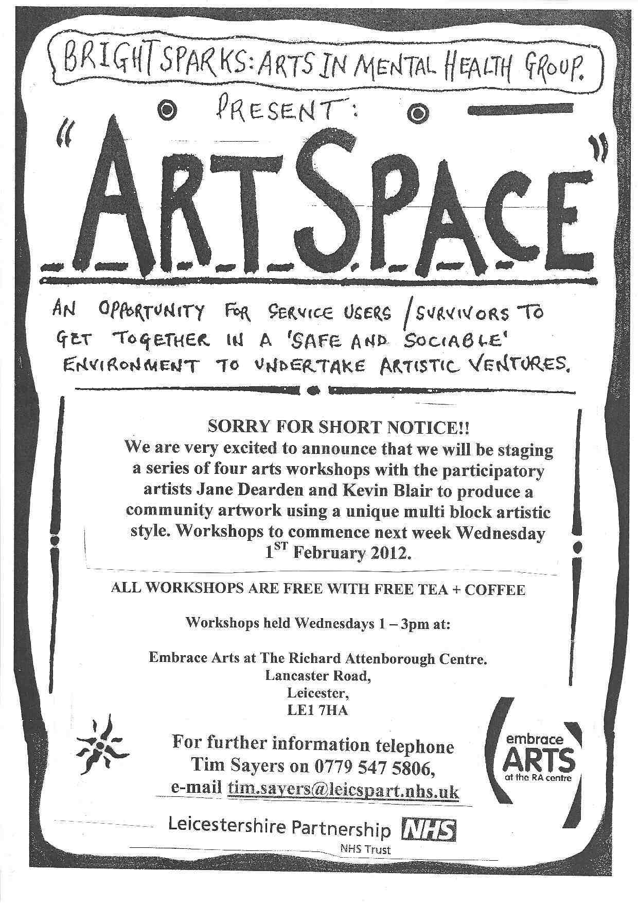

St Hardulphs School garden project
The garden club wanted a piece of art for their school garden so ourselves and the pupils of St Harduphs school in Breedon made this amazing piece from painted tiles….

Fine artist who specialises in drawing and painting.
The garden club wanted a piece of art for their school garden so ourselves and the pupils of St Harduphs school in Breedon made this amazing piece from painted tiles….
100 tiles now complete and varnished by the children of Ibstock Community college. Thank you Sam McCarthy for your help, cant wait to get the mosaic piece on the wall!!
Some amazing work from the everyone at the Savera Centre in Leicester where myself and Mahsuda, a writer, are working on the Everybody’s Reading project….
Project kevin and me worked on with the children from Dame Catherine Harpur School in Ticknall, Derby. Was really great fun!
Me and Kevin are doing a visual game workshop with Bright Sparks; Arts in mental health group….really looking forward to it
We intend to use both of these wall projects for forthcoming workshops…
We began our second project in the same way. We considered many images and finally chose a black and white photograph of Charles Darwin. The photo (A3 size) was divided into a square grid, 9 squares high by 9 squares wide.
As before, each square was numbered on the back and at the top. The photograph was then cut into 81 squares.
This time, instead of working directly onto a flat wall surface, we decided to use 6 inch square MDF board for each area of the image. We used 6mm thick MDF board which is very strong and light weight. Each piece of board was numbered on the back, at the top.
We gave ourselves a maximum of 10 minutes to complete each board – there were many occasions, though, when we were flexible on this ‘rule’. Again, any art medium could be used. Also, we both found using individual boards to be a much more satisfying and pleasurable way of working.
When complete we assembled the work and attached it to a flat wall surface. Its size measured 4.5 feet square. The work was easy to dismantle and store.

what we’ve attempted here is to create a visual game for ourselves..
For our first project we began by choosing a well known painting; we chose The Birth of Venus by Botticelli.
An A3 copy of this painting was divided into a grid of 160 one inch squares. To transfer this to the wall we decided to scale each square up to 5½inches. The final wall grid measured 10 squares high by 16 squares wide. The area to be covered measured, approximately, 4.5 feet high by 7.3 feet wide.
Starting from the top left corner of the wall grid and moving from left to right each square was numbered 1 to 160. Each square of the picture was then numbered in the same way but on the back and at the top. We then cut up the picture into 160 squares and randomly divided them equally between us.
The ‘challenge’ was to interpret each of our individual (numbered) images onto the corresponding squares on the wall. Any method or material could be used. We imposed a 5 minute maximum time limit to complete each square. By doing this, decision making had to be fast and so encouraging spontaneity and the unpredictable. To prevent us from responding to each other’s completed work, each square had to be covered by a piece of paper (same size). Not knowing what the final outcome of all our images together would look like was an intriguing aspect of our collaboration and created a certain level of suspense.
Our intention was to have fun and share a common activity. Also, the project gave us an opportunity to use and combine materials and techniques in ways we wouldn’t normally consider. The final result, we like to think, is an engaging and compelling piece of work. We hope viewers will think so, too.
Before we began we imposed a few ‘rules’, as mentioned above:

Jane Dearden works in early years settings providing creative learning art workshops for children aged 2-5 years.
Jane is strongly influenced by the Reggio Emilia approach to learning. She believes that it is important to provide a safe place where endless possibilities can be explored by the child. The focus of this creative learning is on the process rather than the end result.
The aim of the art workshops is for a group of children to have the freedom to play, explore and totally immerse themselves in the materials and their imaginations. Overall to encourage them to enjoy learning through play!